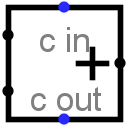

Сумматор с плавающей точкой
Сумматор с плавающей точкой
| Библиотека: | Арифметика |
| Введён в: | 3.5 |
| Внешний вид: |
 |
Поведение
Этот компонент складывает два значения с плавающей запятой (одинарной точности 32 бита или двойной точности 64 бита), поступающие на входы на левой стороне, и выдаёт их сумму на выход на правой стороне.
Если в процессе вычисления получается значение «не-число» (NaN), то на выходе ошибки устанавливается логическая 1, в противном случае — 0. Если на каком-либо из входов присутствует неинициализированное значение (U), высокоимпедансное состояние (Z) или значение ошибки (E), операнд интерпретируется как NaN, в результате чего на выходе суммы также формируется значение NaN, а на выходе ошибки устанавливается логическая 1.
Контакты
- Левая сторона, верхний край (вход, разрядность соответствует атрибуту «Разрядность числа с плавающей точкой»)
- Первое слагаемое с плавающей запятой.
- Левая сторона, нижний край (вход, разрядность соответствует атрибуту «Разрядность числа с плавающей точкой»)
- Второе слагаемое с плавающей запятой.
- Правая сторона (выход, разрядность соответствует атрибуту «Разрядность числа с плавающей точкой»)
- Сумма двух входных значений.
- Нижняя сторона (выход, разрядность равна 1)
- Выход ошибки (ERR). Выдаёт 1, если результатом сложения является NaN (не-число), и 0 в противном случае.
Атрибуты
- Разрядность числа с плавающей точкой
- Разрядность (в битах) операндов и результата (32 для одинарной точности или 64 для двойной точности).
Поведение Инструмента «Нажатие»
Нет.
Назад к Справке по библиотеке